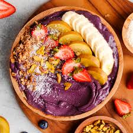

Acai Bowl

Description
This Homemade Acai Bowl recipe uses just 3 simple vegan ingredients for the most delicious DIY açai smoothie bowl ever!
Using a high-powered blender, it's ready within 5 minutes.
Customize with your favorite toppings, like fresh berries, coconut flakes, and granola.
Ingredients
- 1 packet unsweetened frozen acai berry blend.
- 1 banana, frozen
- ¼ to ½ cup non-dairy milk or yogurt
- Fresh berries, granola, peanut butter
Steps
- In a high-powered blender, combine the acai berry packet, frozen banana, and ¼ cup dairy-free milk of choice.
- Blend until completely smooth, adding more dairy-free milk if necessary until your smoothie will blend smoothly.
- Pour into a bowl and top with your favorite toppings.